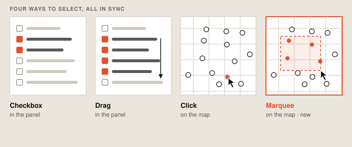

Marquee map selection
One drag on the map selects every feature inside it, instead of a click per feature. The first way to select in bulk directly on Google Earth’s 3D map, built to fit with every existing way to select, on web and mobile.

01Context
Selecting many features at once already worked in the project panel: tick checkboxes, select all, or drag down the list. But not on the map, where people actually see their sites and how they relate. On the map, it was one click per feature.
Earth also needed a temporary drawing state for features on the way, and marquee selection would be the first thing built on it, so it had to set the pattern.
02Approach
A fourth way to select had to agree with the other three. Select on the map and the panel updates. Change the panel and the map follows.

It also had to work on web and on mobile, where dragging usually moves the map. It had to fit both of Earth’s layouts, the streamlined one for new users and the productivity one for heavy users. And it couldn’t collide with measuring and drawing tools that also work from the middle of the screen.
Each of those was worked out by prototyping, testing and iterating with a UX designer and a PM. The implementation, end to end, was one engineer.
03Outcome
Marquee selection is live in Google Earth on the web. Drag a box and every feature inside is selected, on the map and in the panel at once. A summary counts what was caught by type, with the center of the points and the total area of the polygons.
From there the whole selection can be restyled in one edit, placemarks and polygons each with their own settings, or hidden, copied, deleted, zoomed to or handed to Ask Google Earth together. Mixed selections still work: anything that can only be edited on its own is flagged instead of blocking the rest.
It’s also the first feature built on Earth’s new ephemeral drawing state: shapes drawn on the map that exist only while you’re using them and are never saved to the project. That’s what makes room for other tools that need to draw on the map.
Cut and fill

Say hello.
Working on something for the built environment? I’d love to hear about it.